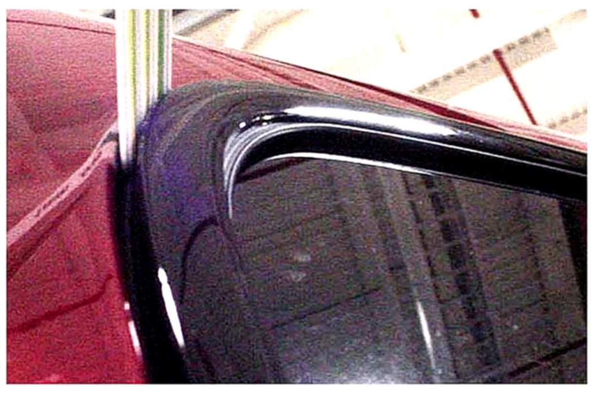
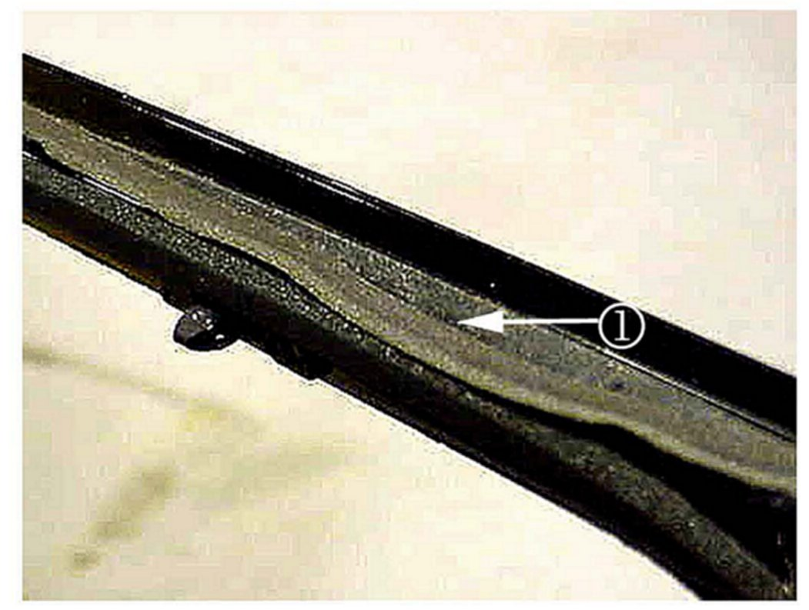
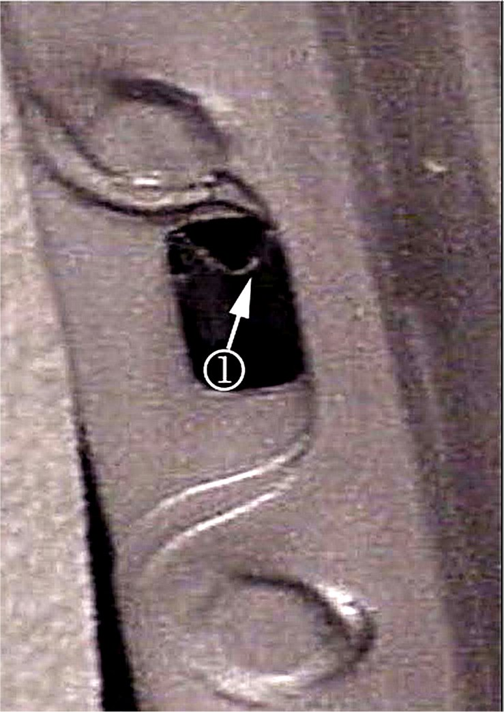
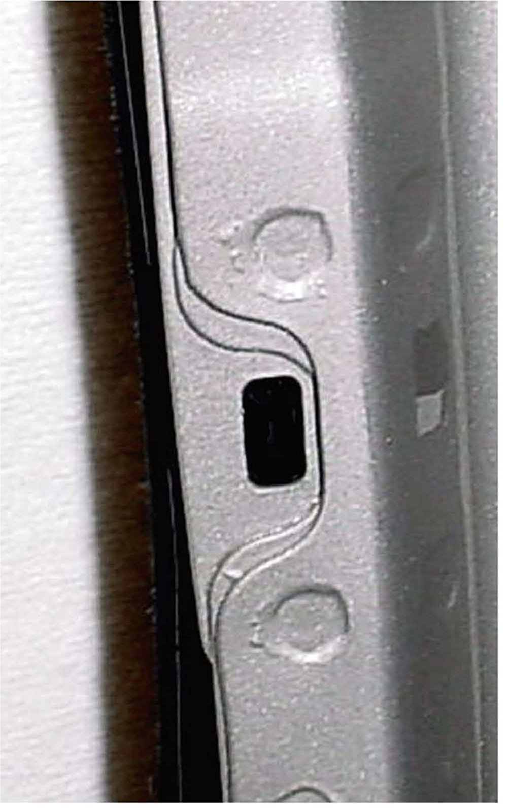
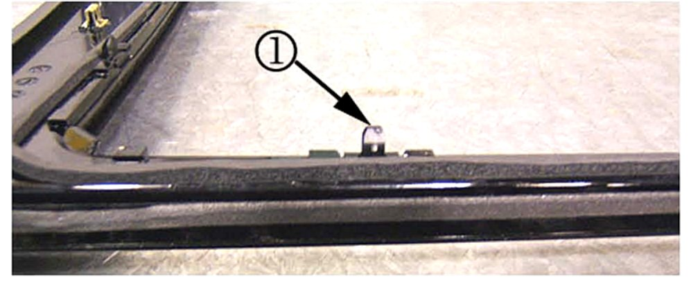
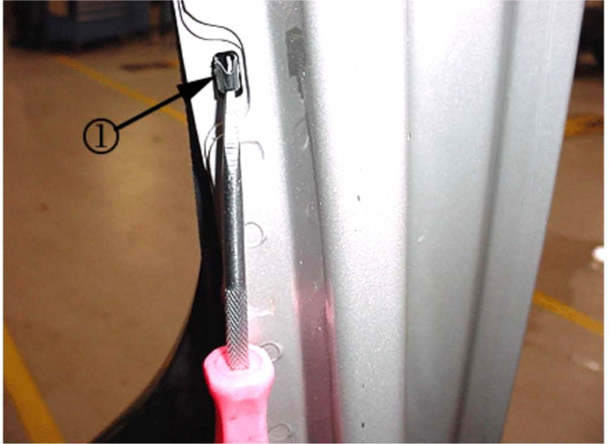
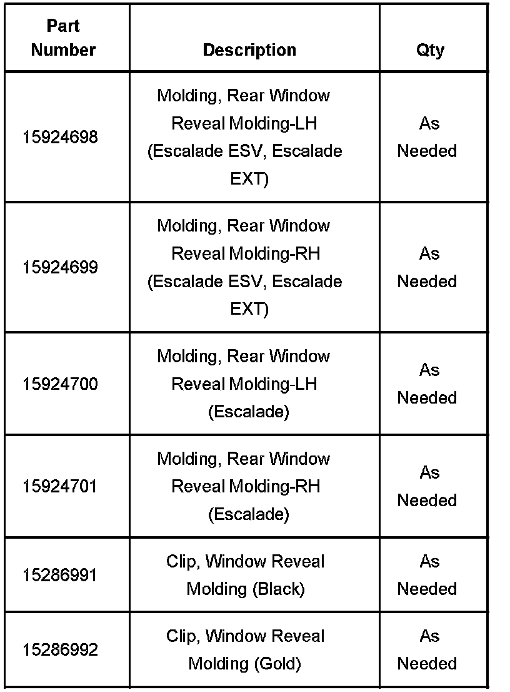
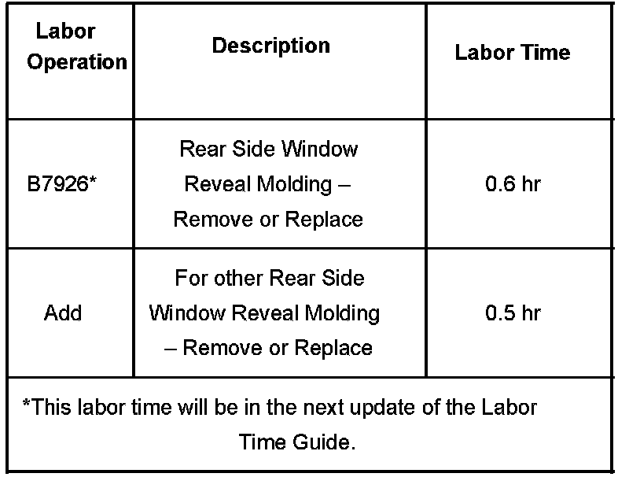

Body - Rear Window Wind Noise
Bulletin No.: 06-08-66-015CDate: July 19, 2007
TECHNICAL
Subject:
Howl or Whistle Windnoise from Rear Windows and/or Rear of Vehicle (Inspect Rear Window Reveal Molding Seals, Door Frame Retaining Holes and Clips)
Models:
2007-2008 Cadillac Escalade Models
Supercede:
This bulletin is being revised to add the 2008 model year. Please discard Corporate Bulletin Number 06-08-66-015B (Section 08 - Body & Accessories).
Condition
Some customers may comment on a howl or whistle noise from the rear windows and/or the rear of the vehicle while driving.
Cause
The rear window reveal molding clips may not be properly seated into the door frame.
The rear window reveal molding seals may be distorted.
The rear door frame retaining holes may contain castings/flashings or not be uniformed.
Correction
DO NOT push or force the rear window reveal molding back into place. This may cause the reveal molding to break.
Inspect the rear window reveal molding seals, the door frame retaining holes and the clips following the procedure below:
Each rear door should be opened completely and closed firmly a total of six complete cycles. This cycling may help potentially unseat any loose reveal molding clips.

Inspect the fit of the rear window reveal moldings to the door frame with a plastic trim stick.
If no gaps are found between the reveal moldings and door frame, refer to Interior or Exterior Windnoise in SI for further diagnosis.
If a gap is found, remove the inside garnish molding. Refer to Rear Door Opening Frame Garnish Molding Replacement in SI.
Remove the reveal molding. Refer to Rear Side Door Window Reveal Molding Replacement in SI.

Inspect the rear window reveal molding seals (1).
If the seals on the reveal molding are good, the original molding may be reused with new clips.
If any of the seals are damaged or distorted, the rear window reveal molding should be replaced.

Inspect and remove any castings/flashings that may be found in the door frame retaining holes.

Inspect the door frame retaining holes for a uniform fit and modify the hole with a small file.
Apply GM Synthetic Lubrication with Teflon, P/N 12371287 (In Canada, 10953437), to any bare metal edges.

If reusing the original reveal molding, replace all nine black clips (1) on the window reveal molding with P/N 15286991 (black clip).
The three gold clips are reusable, but replace any damaged or missing clips with P/N 15286992 (gold clip).
Start to install the window reveal molding.

Use a hook-style tool or screwdriver to pull on the clips (1) towards you. This will ensure that the clips are properly seated into the door frame.
Tip
You should hear the two barbs on the clip snap into place when properly engaged.
Finish installing the window reveal molding. Refer to Rear Side Door Window Reveal Molding Replacement in SI.
Install the inside garnish molding. Refer to Rear Door Opening Frame Garnish Molding Replacement in SI.
Verify that the windnoise has been fixed.

Parts Information
Warranty Information

For vehicles repaired under warranty, use the table.

Disclaimer